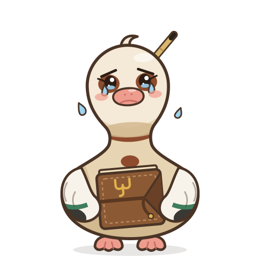

404
ページが見つかりませんPage not foundPage introuvable
お探しのページは、移動したか、URL が違っているようです。下のリンクから探してみてください。The page you are looking for has moved, or the address is not quite right. Try one of the links below.La page demandée a été déplacée, ou l’adresse n’est pas tout à fait exacte. Essayez l’un des liens ci-dessous.